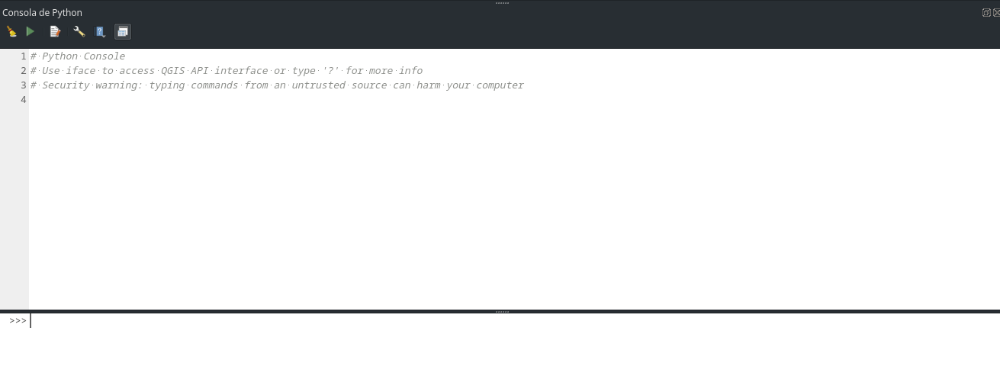

Módulo 5: Automatización con Python y PyQGIS
De tareas manuales a flujos automatizados para empresas eléctricas
1 Objetivos del Módulo
Al finalizar este módulo, los participantes podrán:
- Comprender qué es Python y por qué automatizar tareas en QGIS
- Usar la consola de Python integrada en QGIS con confianza
- Leer y manipular información de capas y atributos usando PyQGIS
- Crear scripts simples para automatizar tareas repetitivas del sector eléctrico
- Exportar resultados automáticamente a Excel, PDF y otros formatos
- Aplicar el Processing Framework para crear flujos de trabajo personalizados
2 🤔 ¿Por qué automatizar tareas en QGIS?
2.1 El problema diario en empresas eléctricas
Imagina que trabajas en una empresa eléctrica y cada semana debes:
- ✅ Generar reportes de cobertura de 50 subestaciones
- ✅ Calcular áreas de servicio para 200 transformadores
- ✅ Exportar mapas de rutas de mantenimiento a PDF
- ✅ Actualizar distancias entre puntos críticos
- ✅ Crear buffers de seguridad alrededor de líneas de alta tensión
¿Cuánto tiempo te toma hacer esto manualmente? 🕐
2.2 La solución: Python + PyQGIS
Python es como tener un asistente digital que:
- Nunca se cansa 🤖
- No comete errores de cálculo 🎯
- Trabaja 24/7 si es necesario ⏰
- Repite tareas perfectamente 🔄
- Documenta todo lo que hace 📝
PyQGIS es el “idioma” que Python usa para “hablar” con QGIS.
Si QGIS fuera un automóvil, Python sería el piloto automático que puede manejar rutas complejas sin intervención humana.
2.3 Casos de éxito en el sector eléctrico
| Tarea manual (antes) | Tiempo | Automatizada (después) | Tiempo |
|---|---|---|---|
| Calcular cobertura de 50 subestaciones | 4 horas | Script automático | 5 minutos |
| Generar 20 mapas de rutas | 2 horas | Exportación masiva | 30 segundos |
| Actualizar distancias en 500 puntos | 6 horas | Cálculo automático | 2 minutos |
3 🐍 Introducción a Python en QGIS
3.1 ¿Qué es Python?
Python es un lenguaje de programación diseñado para ser:
- Fácil de leer: Se parece al inglés
- Poderoso: Puede hacer cálculos complejos
- Versátil: Funciona con mapas, datos, internet, etc.
3.2 Acceso a la consola de Python
La consola de Python está integrada en QGIS:
Menú: Complementos → Consola de Python
Atajo: Ctrl+Alt+P (Windows/Linux) o Cmd+Alt+P (Mac)3.3 Interfaz de la consola

La consola tiene dos áreas principales:
- Área de comandos (abajo): Escribes y ejecutas código línea por línea
- Editor de scripts (arriba): Escribes programas completos
Haz clic en “Mostrar editor” para ver ambas áreas. El editor te permite escribir scripts más largos y guardarlos.
3.4 Primeros comandos básicos
Vamos a empezar con lo más simple:
# Esto es un comentario - Python lo ignora
# Los comentarios nos ayudan a explicar qué hace el código
# Imprimir texto en pantalla
print("¡Hola desde QGIS!")
# Hacer cálculos simples
print(2 + 3)
print(10 * 5)
# Crear variables (como cajas que guardan información)
nombre_empresa = "Empresa Eléctrica Nacional"
numero_subestaciones = 25
print(f"La {nombre_empresa} tiene {numero_subestaciones} subestaciones")¡Prueba estos comandos en tu consola!
4 🗺️ Entendiendo PyQGIS: La conexión con QGIS
4.1 ¿Qué es PyQGIS?
PyQGIS es una biblioteca que permite a Python “hablar” con QGIS. Es como un traductor entre Python y QGIS.
4.2 Conceptos clave de PyQGIS
Piensa en PyQGIS como una jerarquía de objetos:
🏢 QgsProject (El proyecto completo)
└── 📁 QgsVectorLayer (Una capa de datos)
└── 📄 QgsFeature (Una fila/entidad)
├── 🔷 QgsGeometry (La forma geográfica)
└── 📊 Attributes (Los datos de la tabla)4.3 Objetos principales explicados
| Objeto PyQGIS | ¿Qué es? | Analogía |
|---|---|---|
QgsProject |
Todo tu proyecto QGIS | El edificio completo |
QgsVectorLayer |
Una capa (subestaciones, líneas, etc.) | Una oficina en el edificio |
QgsFeature |
Una entidad específica (una subestación) | Una persona en la oficina |
QgsGeometry |
La ubicación/forma geográfica | La dirección de la persona |
QgsField |
Una columna de datos | Una característica de la persona |
4.4 Primeros pasos con PyQGIS
# Importar las herramientas de PyQGIS
from qgis.core import *
from qgis.gui import *
# Acceder al proyecto actual
proyecto = QgsProject.instance()
print(f"Proyecto actual: {proyecto.fileName()}")
# Ver todas las capas del proyecto
capas = proyecto.mapLayers()
print(f"Número de capas: {len(capas)}")
# Listar nombres de las capas
for id_capa, capa in capas.items():
entidades = capa.featureCount() if capa.type() == QgsMapLayer.VectorLayer else "N/A"
print(f"- {capa.name()} ({entidades} entidades)")5 📊 Trabajando con capas y datos
5.1 Obtener información básica de una capa
# Obtener la capa activa (la que está seleccionada)
capa_activa = iface.activeLayer()
if capa_activa:
print(f"Capa seleccionada: {capa_activa.name()}")
print(f"Tipo de geometría: {capa_activa.geometryType().name}")
print(f"Número de entidades: {capa_activa.featureCount()}")
print(f"Sistema de coordenadas: {capa_activa.crs().authid()}")
else:
print("No hay ninguna capa seleccionada")5.2 Leer los campos (columnas) de una capa
capa = iface.activeLayer()
print("Campos disponibles:")
for campo in capa.fields():
tipo = campo.typeName()
print(f"- {campo.name()} ({tipo})")5.3 Ejemplo práctico: Información de subestaciones
Supongamos que tienes una capa de subestaciones eléctricas:
# Buscar la capa de subestaciones por nombre
capas_proyecto = QgsProject.instance().mapLayersByName("Subestaciones")
if capas_proyecto:
subestaciones = capas_proyecto[0] # Tomar la primera capa encontrada
print(f"=== INFORMACIÓN DE SUBESTACIONES ===")
print(f"Total de subestaciones: {subestaciones.featureCount()}")
# Mostrar información de cada subestación
for subestacion in subestaciones.getFeatures():
nombre = subestacion["nombre"] # Asumiendo que hay un campo "nombre"
voltaje = subestacion["voltaje"] # Asumiendo que hay un campo "voltaje"
print(f"- {nombre}: {voltaje} kV")
# Solo mostrar las primeras 5 para no saturar la consola
if subestacion.id() >= 5:
print("... (y más)")
break
else:
print("No se encontró la capa 'Subestaciones'")6 🔧 Scripts de automatización para empresas eléctricas
6.1 Script 1: Calcular distancias entre subestaciones
from qgis.core import QgsDistanceArea, QgsUnitTypes
def calcular_distancias_subestaciones():
"""
Calcula la distancia entre todas las subestaciones
y encuentra la más cercana a cada una.
"""
# Buscar la capa de subestaciones
capas = QgsProject.instance().mapLayersByName("Subestaciones")
if not capas:
print("❌ No se encontró la capa 'Subestaciones'")
return
subestaciones = capas[0]
# Herramienta para calcular distancias
calculadora = QgsDistanceArea()
calculadora.setSourceCrs(subestaciones.crs(), QgsProject.instance().transformContext())
print("=== ANÁLISIS DE DISTANCIAS ENTRE SUBESTACIONES ===")
# Obtener todas las subestaciones como lista
lista_subestaciones = list(subestaciones.getFeatures())
for subestacion_a in lista_subestaciones:
nombre_a = subestacion_a["nombre"]
punto_a = subestacion_a.geometry().asPoint()
distancia_minima = float('inf')
subestacion_mas_cercana = None
# Comparar con todas las demás subestaciones
for subestacion_b in lista_subestaciones:
if subestacion_a.id() == subestacion_b.id():
continue # Saltar la misma subestación
punto_b = subestacion_b.geometry().asPoint()
distancia = calculadora.measureLine(punto_a, punto_b)
if distancia < distancia_minima:
distancia_minima = distancia
subestacion_mas_cercana = subestacion_b["nombre"]
# Convertir metros a kilómetros
distancia_km = distancia_minima / 1000
print(f"🔌 {nombre_a} → más cercana: {subestacion_mas_cercana} ({distancia_km:.2f} km)")
# Ejecutar la función
calcular_distancias_subestaciones()6.2 Script 2: Generar buffers de seguridad automáticamente
def crear_zonas_seguridad_lineas():
"""
Crea zonas de seguridad alrededor de líneas de alta tensión
con diferentes distancias según el voltaje.
"""
# Buscar la capa de líneas de transmisión
capas = QgsProject.instance().mapLayersByName("Lineas_Transmision")
if not capas:
print("❌ No se encontró la capa 'Lineas_Transmision'")
return
lineas = capas[0]
# Definir distancias de seguridad según voltaje
distancias_seguridad = {
"138": 50, # 138 kV → 50 metros
"230": 75, # 230 kV → 75 metros
"500": 150 # 500 kV → 150 metros
}
print("=== CREANDO ZONAS DE SEGURIDAD ===")
for voltaje, distancia in distancias_seguridad.items():
# Crear nueva capa para este voltaje
crs = lineas.crs().authid()
capa_buffer = QgsVectorLayer(
f"Polygon?crs={crs}",
f"Zona_Seguridad_{voltaje}kV",
"memory"
)
# Configurar campos de la nueva capa
provider = capa_buffer.dataProvider()
provider.addAttributes([
QgsField("voltaje", QVariant.String),
QgsField("distancia_m", QVariant.Int),
QgsField("nombre_linea", QVariant.String)
])
capa_buffer.updateFields()
# Filtrar líneas por voltaje y crear buffers
entidades_buffer = []
for linea in lineas.getFeatures():
voltaje_linea = str(linea["voltaje"])
if voltaje_linea == voltaje:
# Crear buffer
geometria_buffer = linea.geometry().buffer(distancia, 8)
# Crear nueva entidad
nueva_entidad = QgsFeature()
nueva_entidad.setGeometry(geometria_buffer)
nueva_entidad.setAttributes([
f"{voltaje} kV",
distancia,
linea["nombre"]
])
entidades_buffer.append(nueva_entidad)
# Agregar entidades a la capa
provider.addFeatures(entidades_buffer)
# Agregar capa al proyecto
QgsProject.instance().addMapLayer(capa_buffer)
print(f"✅ Zona de seguridad {voltaje} kV creada: {len(entidades_buffer)} buffers de {distancia}m")
# Ejecutar la función
crear_zonas_seguridad_lineas()6.3 Script 3: Exportar reportes automáticamente
import csv
from datetime import datetime
import os
def generar_reporte_subestaciones():
"""
Genera un reporte CSV con información detallada de todas las subestaciones.
"""
# Buscar la capa de subestaciones
capas = QgsProject.instance().mapLayersByName("Subestaciones")
if not capas:
print("❌ No se encontró la capa 'Subestaciones'")
return
subestaciones = capas[0]
# Crear nombre de archivo con fecha
fecha_actual = datetime.now().strftime("%Y%m%d_%H%M")
nombre_archivo = f"reporte_subestaciones_{fecha_actual}.csv"
ruta_archivo = os.path.join(os.path.expanduser("~"), "Desktop", nombre_archivo)
print(f"=== GENERANDO REPORTE DE SUBESTACIONES ===")
# Crear archivo CSV
with open(ruta_archivo, 'w', newline='', encoding='utf-8') as archivo:
# Obtener nombres de campos
campos = [campo.name() for campo in subestaciones.fields()]
campos.extend(["coordenada_x", "coordenada_y", "area_cobertura_km2"])
writer = csv.writer(archivo)
writer.writerow(campos) # Escribir encabezados
# Escribir datos de cada subestación
for subestacion in subestaciones.getFeatures():
# Datos básicos de atributos
fila = subestacion.attributes()
# Agregar coordenadas
punto = subestacion.geometry().asPoint()
fila.extend([punto.x(), punto.y()])
# Calcular área de cobertura (buffer de 5 km)
buffer_cobertura = subestacion.geometry().buffer(5000, 8) # 5000 metros
area_m2 = buffer_cobertura.area()
area_km2 = area_m2 / 1_000_000 # Convertir a km²
fila.append(round(area_km2, 2))
writer.writerow(fila)
print(f"✅ Reporte generado exitosamente:")
print(f"📁 Ubicación: {ruta_archivo}")
print(f"📊 Total de subestaciones: {subestaciones.featureCount()}")
# Ejecutar la función
generar_reporte_subestaciones()7 📤 Exportación automatizada de resultados
7.1 Exportar capas a diferentes formatos
def exportar_capa_multiple_formatos(nombre_capa):
"""
Exporta una capa a múltiples formatos útiles para empresas eléctricas.
"""
# Buscar la capa
capas = QgsProject.instance().mapLayersByName(nombre_capa)
if not capas:
print(f"❌ No se encontró la capa '{nombre_capa}'")
return
capa = capas[0]
# Definir formatos de exportación
formatos = {
"GeoJSON": "GeoJSON",
"Shapefile": "ESRI Shapefile",
"Excel": "XLSX",
"KML": "KML"
}
print(f"=== EXPORTANDO '{nombre_capa}' A MÚLTIPLES FORMATOS ===")
# Crear carpeta de exportación
carpeta_exportacion = os.path.join(os.path.expanduser("~"), "Desktop", "exportaciones_qgis")
os.makedirs(carpeta_exportacion, exist_ok=True)
for nombre_formato, driver in formatos.items():
# Definir extensión de archivo
extensiones = {
"GeoJSON": ".geojson",
"Shapefile": ".shp",
"Excel": ".xlsx",
"KML": ".kml"
}
extension = extensiones[nombre_formato]
ruta_salida = os.path.join(carpeta_exportacion, f"{nombre_capa}{extension}")
# Configurar opciones de exportación
opciones = QgsVectorFileWriter.SaveVectorOptions()
opciones.driverName = driver
opciones.fileEncoding = "UTF-8"
# Exportar
error, mensaje, _, _ = QgsVectorFileWriter.writeAsVectorFormatV3(
capa,
ruta_salida,
QgsCoordinateTransformContext(),
opciones
)
if error == QgsVectorFileWriter.NoError:
print(f"✅ {nombre_formato}: {ruta_salida}")
else:
print(f"❌ Error en {nombre_formato}: {mensaje}")
print(f"\n📁 Todos los archivos guardados en: {carpeta_exportacion}")
# Ejemplo de uso
exportar_capa_multiple_formatos("Subestaciones")7.2 Exportar mapas como imágenes
def exportar_mapa_actual():
"""
Exporta el mapa actual como imagen PNG de alta calidad.
"""
from qgis.core import QgsMapSettings, QgsMapRendererParallelJob
from PyQt5.QtCore import QSize
from PyQt5.QtGui import QColor
# Configurar el mapa
configuracion = QgsMapSettings()
configuracion.setLayers([layer for layer in QgsProject.instance().mapLayers().values()])
configuracion.setBackgroundColor(QColor(255, 255, 255)) # Fondo blanco
configuracion.setOutputSize(QSize(1920, 1080)) # Resolución Full HD
configuracion.setExtent(iface.mapCanvas().extent())
configuracion.setDestinationCrs(QgsProject.instance().crs())
# Renderizar el mapa
trabajo_render = QgsMapRendererParallelJob(configuracion)
trabajo_render.start()
trabajo_render.waitForFinished()
# Guardar imagen
imagen = trabajo_render.renderedImage()
fecha_actual = datetime.now().strftime("%Y%m%d_%H%M")
nombre_archivo = f"mapa_electrico_{fecha_actual}.png"
ruta_archivo = os.path.join(os.path.expanduser("~"), "Desktop", nombre_archivo)
if imagen.save(ruta_archivo):
print(f"✅ Mapa exportado exitosamente:")
print(f"📁 {ruta_archivo}")
print(f"📐 Resolución: {imagen.width()}x{imagen.height()}")
else:
print("❌ Error al guardar la imagen")
# Ejecutar la función
exportar_mapa_actual()8 ⚙️ QGIS Processing Framework
8.1 ¿Qué es el Processing Framework?
El Processing Framework es como una “caja de herramientas automatizada” que contiene cientos de algoritmos listos para usar desde Python.
8.2 Usar herramientas de processing desde Python
import processing
# Ver todas las herramientas disponibles (¡son muchas!)
# for algoritmo in QgsApplication.processingRegistry().algorithms():
# print(f"{algoritmo.id()} — {algoritmo.displayName()}")
# Ejemplo 1: Crear buffer automáticamente
def crear_buffer_processing(nombre_capa, distancia_metros):
"""
Crea un buffer usando el Processing Framework.
"""
capas = QgsProject.instance().mapLayersByName(nombre_capa)
if not capas:
print(f"❌ Capa '{nombre_capa}' no encontrada")
return
capa_origen = capas[0]
# Ejecutar algoritmo de buffer
resultado = processing.run("native:buffer", {
'INPUT': capa_origen,
'DISTANCE': distancia_metros,
'SEGMENTS': 8,
'END_CAP_STYLE': 0, # Redondo
'JOIN_STYLE': 0, # Redondo
'MITER_LIMIT': 2,
'DISSOLVE': False,
'OUTPUT': 'TEMPORARY_OUTPUT'
})
# Agregar resultado al proyecto
capa_buffer = resultado['OUTPUT']
capa_buffer.setName(f"Buffer_{nombre_capa}_{distancia_metros}m")
QgsProject.instance().addMapLayer(capa_buffer)
print(f"✅ Buffer creado: {distancia_metros}m alrededor de '{nombre_capa}'")
return capa_buffer
# Ejemplo de uso
crear_buffer_processing("Subestaciones", 1000) # Buffer de 1 km8.3 Flujo de trabajo automatizado completo
def flujo_analisis_electrico_completo():
"""
Flujo completo de análisis para empresa eléctrica:
1. Crear zonas de cobertura de subestaciones
2. Identificar áreas sin cobertura
3. Calcular estadísticas
4. Exportar resultados
"""
print("🔄 INICIANDO ANÁLISIS ELÉCTRICO AUTOMATIZADO")
print("=" * 50)
# Paso 1: Verificar capas necesarias
capas_necesarias = ["Subestaciones", "Municipios"]
for nombre_capa in capas_necesarias:
if not QgsProject.instance().mapLayersByName(nombre_capa):
print(f"❌ Falta la capa: {nombre_capa}")
return
subestaciones = QgsProject.instance().mapLayersByName("Subestaciones")[0]
municipios = QgsProject.instance().mapLayersByName("Municipios")[0]
# Paso 2: Crear zonas de cobertura (buffer de 10 km)
print("📍 Creando zonas de cobertura...")
cobertura = processing.run("native:buffer", {
'INPUT': subestaciones,
'DISTANCE': 10000, # 10 km
'SEGMENTS': 16,
'DISSOLVE': True, # Unir buffers superpuestos
'OUTPUT': 'TEMPORARY_OUTPUT'
})['OUTPUT']
cobertura.setName("Cobertura_Electrica_10km")
QgsProject.instance().addMapLayer(cobertura)
# Paso 3: Identificar áreas sin cobertura
print("🔍 Identificando áreas sin cobertura...")
sin_cobertura = processing.run("native:difference", {
'INPUT': municipios,
'OVERLAY': cobertura,
'OUTPUT': 'TEMPORARY_OUTPUT'
})['OUTPUT']
sin_cobertura.setName("Areas_Sin_Cobertura")
QgsProject.instance().addMapLayer(sin_cobertura)
# Paso 4: Calcular estadísticas
print("📊 Calculando estadísticas...")
# Área total de municipios
area_total = sum(municipio.geometry().area() for municipio in municipios.getFeatures())
area_total_km2 = area_total / 1_000_000
# Área sin cobertura
area_sin_cobertura = sum(area.geometry().area() for area in sin_cobertura.getFeatures())
area_sin_cobertura_km2 = area_sin_cobertura / 1_000_000
# Porcentaje de cobertura
porcentaje_cobertura = ((area_total_km2 - area_sin_cobertura_km2) / area_total_km2) * 100
# Paso 5: Mostrar resultados
print("\n📈 RESULTADOS DEL ANÁLISIS:")
print(f"🏢 Total de subestaciones: {subestaciones.featureCount()}")
print(f"🗺️ Área total analizada: {area_total_km2:.2f} km²")
print(f"✅ Área con cobertura: {(area_total_km2 - area_sin_cobertura_km2):.2f} km²")
print(f"❌ Área sin cobertura: {area_sin_cobertura_km2:.2f} km²")
print(f"📊 Porcentaje de cobertura: {porcentaje_cobertura:.1f}%")
# Paso 6: Exportar reporte
print("\n💾 Exportando reporte...")
fecha = datetime.now().strftime("%Y%m%d_%H%M")
ruta_reporte = os.path.join(os.path.expanduser("~"), "Desktop", f"analisis_cobertura_{fecha}.txt")
with open(ruta_reporte, 'w', encoding='utf-8') as archivo:
archivo.write("REPORTE DE ANÁLISIS DE COBERTURA ELÉCTRICA\n")
archivo.write("=" * 50 + "\n\n")
archivo.write(f"Fecha del análisis: {datetime.now().strftime('%d/%m/%Y %H:%M')}\n")
archivo.write(f"Total de subestaciones: {subestaciones.featureCount()}\n")
archivo.write(f"Área total analizada: {area_total_km2:.2f} km²\n")
archivo.write(f"Área con cobertura: {(area_total_km2 - area_sin_cobertura_km2):.2f} km²\n")
archivo.write(f"Área sin cobertura: {area_sin_cobertura_km2:.2f} km²\n")
archivo.write(f"Porcentaje de cobertura: {porcentaje_cobertura:.1f}%\n")
print(f"✅ Análisis completado. Reporte guardado en: {ruta_reporte}")
# Ejecutar el flujo completo
flujo_analisis_electrico_completo()9 🛠️ Ejercicios Prácticos
9.1 Ejercicio 5.1: Primeros pasos (15 minutos)
Objetivo: Familiarizarse con la consola Python
- Abre la consola de Python en QGIS
- Ejecuta estos comandos uno por uno:
# Saludo personalizado
print("¡Hola! Soy un analista de datos eléctricos")
# Cálculos básicos de potencia
voltaje = 230 # kV
corriente = 500 # A
potencia = voltaje * corriente
print(f"Potencia: {potencia} kW")
# Lista de subestaciones (simulada)
subestaciones = ["Central", "Norte", "Sur", "Este", "Oeste"]
print(f"Tenemos {len(subestaciones)} subestaciones:")
for i, nombre in enumerate(subestaciones, 1):
print(f"{i}. {nombre}")9.2 Ejercicio 5.2: Información de capas (20 minutos)
Objetivo: Leer información básica de las capas del proyecto
- Carga una capa de puntos (puede ser cualquier capa de puntos)
- Ejecuta este script adaptándolo a tu capa:
# Obtener información de la capa activa
capa = iface.activeLayer()
if capa:
print(f"=== INFORMACIÓN DE LA CAPA ===")
print(f"Nombre: {capa.name()}")
print(f"Tipo: {capa.geometryType()}")
print(f"Entidades: {capa.featureCount()}")
print(f"CRS: {capa.crs().authid()}")
print(f"\n=== CAMPOS DISPONIBLES ===")
for campo in capa.fields():
print(f"- {campo.name()} ({campo.typeName()})")
print(f"\n=== PRIMERAS 3 ENTIDADES ===")
for i, entidad in enumerate(capa.getFeatures()):
if i >= 3: # Solo mostrar las primeras 3
break
print(f"Entidad {i+1}: {entidad.attributes()}")
else:
print("❌ No hay ninguna capa seleccionada")9.3 Ejercicio 5.3: Script de automatización (25 minutos)
Objetivo: Crear un script útil para análisis eléctrico
Crea un script que: 1. Calcule el área de cobertura de cada punto (buffer de 2 km) 2. Sume el área total de cobertura 3. Exporte los resultados a un archivo de texto
def analizar_cobertura_puntos():
"""
Analiza la cobertura de puntos con buffer de 2 km
"""
capa = iface.activeLayer()
if not capa:
print("❌ Selecciona una capa de puntos primero")
return
print(f"🔍 Analizando cobertura de: {capa.name()}")
area_total = 0
contador = 0
for punto in capa.getFeatures():
# Crear buffer de 2 km
buffer = punto.geometry().buffer(2000, 8)
area_buffer = buffer.area() # en metros cuadrados
area_km2 = area_buffer / 1_000_000 # convertir a km²
area_total += area_km2
contador += 1
# Mostrar información del punto
nombre = punto.attributes()[0] if punto.attributes() else f"Punto_{contador}"
print(f"📍 {nombre}: {area_km2:.2f} km² de cobertura")
print(f"\n📊 RESUMEN:")
print(f"Total de puntos: {contador}")
print(f"Área total de cobertura: {area_total:.2f} km²")
print(f"Área promedio por punto: {area_total/contador:.2f} km²")
# Guardar resultados
fecha = datetime.now().strftime("%Y%m%d_%H%M")
archivo = os.path.join(os.path.expanduser("~"), "Desktop", f"analisis_cobertura_{fecha}.txt")
with open(archivo, 'w', encoding='utf-8') as f:
f.write(f"ANÁLISIS DE COBERTURA - {capa.name()}\n")
f.write("=" * 40 + "\n")
f.write(f"Fecha: {datetime.now().strftime('%d/%m/%Y %H:%M')}\n")
f.write(f"Total de puntos: {contador}\n")
f.write(f"Área total de cobertura: {area_total:.2f} km²\n")
f.write(f"Área promedio por punto: {area_total/contador:.2f} km²\n")
print(f"💾 Resultados guardados en: {archivo}")
# Ejecutar el análisis
analizar_cobertura_puntos()9.4 Ejercicio 5.4: Desafío avanzado (30 minutos)
Objetivo: Combinar múltiples técnicas
Crea un script que: 1. Identifique el punto más alejado del centro del mapa 2. Calcule la distancia desde ese punto a todos los demás 3. Cree una capa nueva con líneas conectando ese punto con los 3 más cercanos 4. Exporte todo a un reporte completo
10 📚 Recursos y Referencias
10.1 Documentación oficial
- PyQGIS Developer Cookbook - Guía completa de PyQGIS
- QGIS API Documentation - Referencia técnica completa
- Python.org Tutorial - Tutorial oficial de Python
10.2 Recursos específicos para empresas eléctricas
- QGIS for Power System Analysis - Caso de estudio
- Spatial Analysis for Utilities - Conceptos generales
10.3 Comunidad y ayuda
- QGIS Community - Foros y grupos de usuarios
- Stack Overflow - QGIS - Preguntas y respuestas
- GIS Stack Exchange - Comunidad especializada
11 🎯 Puntos clave para recordar
- Python es tu asistente: Automatiza tareas repetitivas y complejas
- PyQGIS es el traductor: Permite que Python “hable” con QGIS
- Empieza simple: Comandos básicos → scripts simples → automatización compleja
- Practica con datos reales: Usa casos de tu empresa eléctrica
- Documenta tu código: Los comentarios te ayudarán después
- Guarda tus scripts: Reutiliza y mejora tus automatizaciones
11.1 Flujo de trabajo recomendado
1. 🎯 Identifica la tarea repetitiva
2. 🧪 Prueba comandos en la consola
3. 📝 Escribe el script en el editor
4. 🔄 Prueba con datos pequeños
5. ⚡ Ejecuta con datos completos
6. 💾 Guarda y documenta el script
7. 🔄 Reutiliza y mejora¡Con estas herramientas podrás automatizar la mayoría de tareas repetitivas en tu trabajo con datos geoespaciales eléctricos! 🚀